May 03 - May 09, 2021
MSIT Dashboard is implemented by using the technologies Reactjs, AWS & Python flask. In the first week we have rectified the issues in the current Dashboard and our goal was to fix them. Moreover, our goal for week-1 was to come up with the design. As a team we have integreted all our designs into one common design. On the another hand, I have gone through the code to understand the flow of the program. To become more proficient in react I have gone through some of the resources and was reading the react documentation.
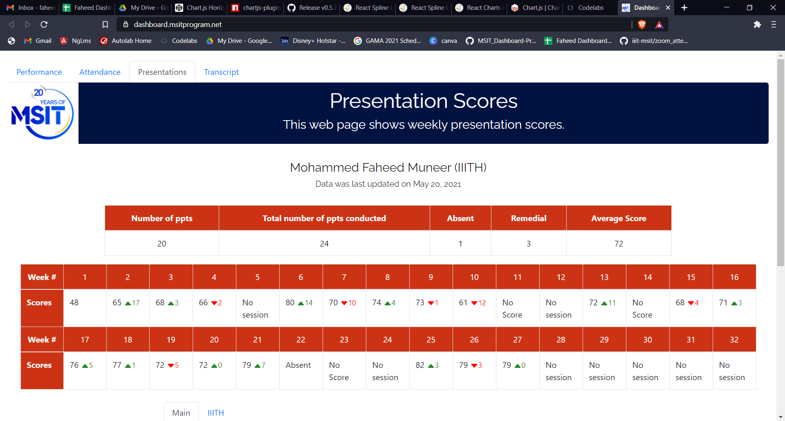
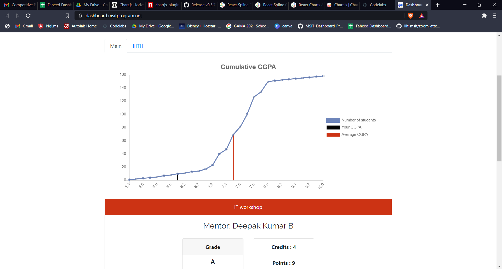
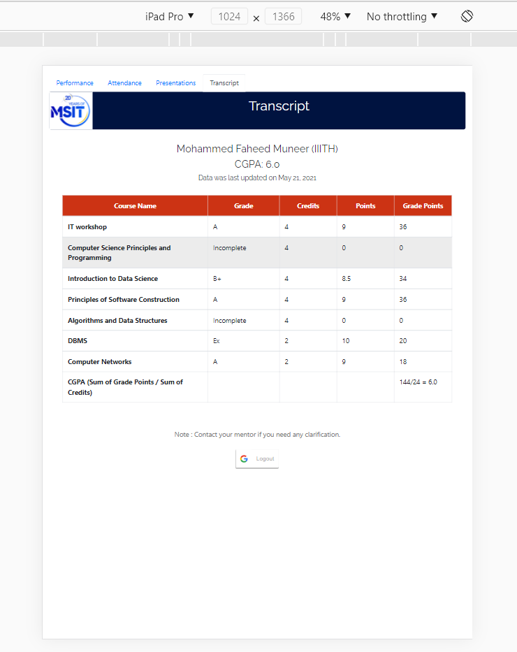
Firstly, I have gone through the code to understand where I need to do changes such that it could make the Transcript page responsive.
I have tried some part and took help from my fellow teammates to make it responsive
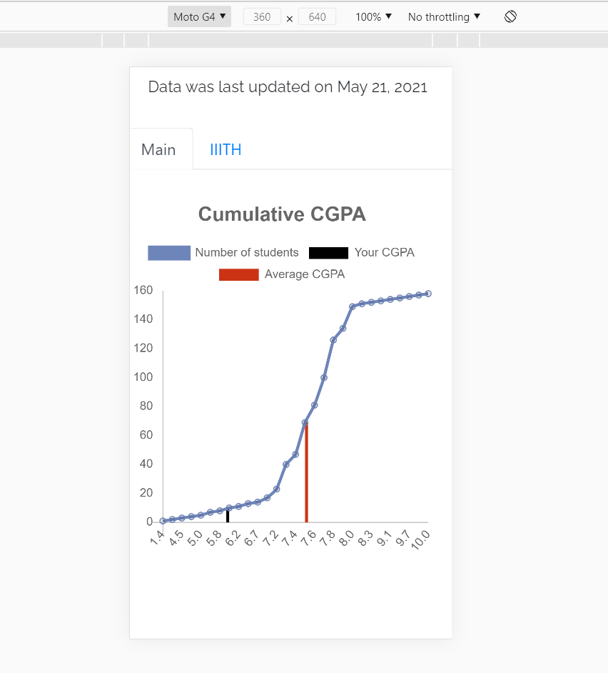

In the Mobile view, the issues which were concerned are the overlapping of the numbers.
It toom a lot of time for us to figure out where we need to do the changes in order to make the Line and Bar graphs responsive.
Then, we have made Line and Bar Graph responsive using 'Media Queries'.
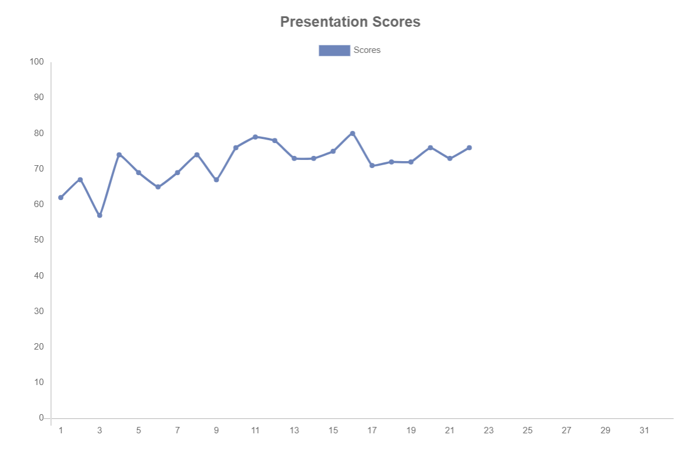
Initially we have gone through Flask installation and have check how the data the getting captured using AWS and server side Python.
I started with working with Line graph by going through some resources in Chart-js Documentation.
Additionally, we are instructed to make line graph Cumulative by removing 'No session' and 'No score'

Initially we worked on the line graph to make it Cumulative and worked on the requirements.
Then we faced some impediments as the threshold line of 70% was not fitting appropriate.
Finally, we have come up with the idea of making line graph as bar graph, and the threshold line was set good as well for it.
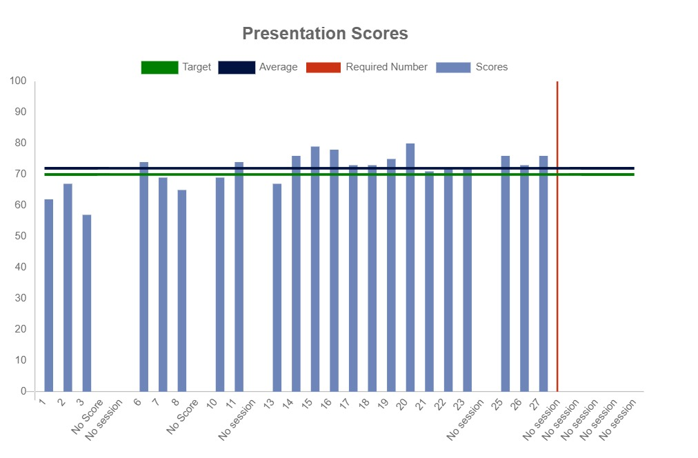
Firstly we faced issues while correcting the No scores (or) No session part appropriately.
Then by getting adequate help, we accomplished the required final version of the Line graph.
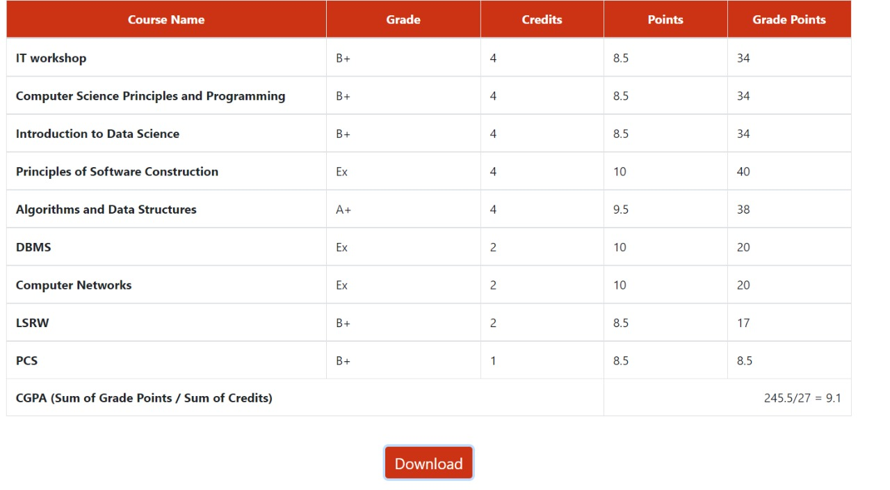
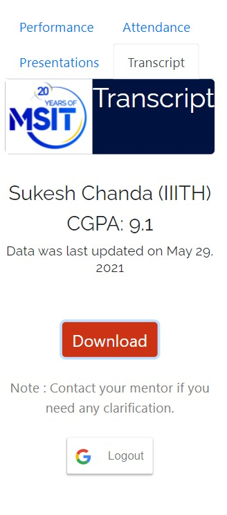
We have worked on this goal parallely
It was a major task to provide a pdf download of the Transcript page for the existing dashboard
After a lot of research, we came up with a solution and achieved our desired output
May 31 - June 05, 2021
Firstly we faced issues while designing the page.
We came up with the design and worked on writing the code for the Mock Interview Page
Then by getting adequate help from the team, we implemented the design and appended video into the page too and added it in our Dashboard as well
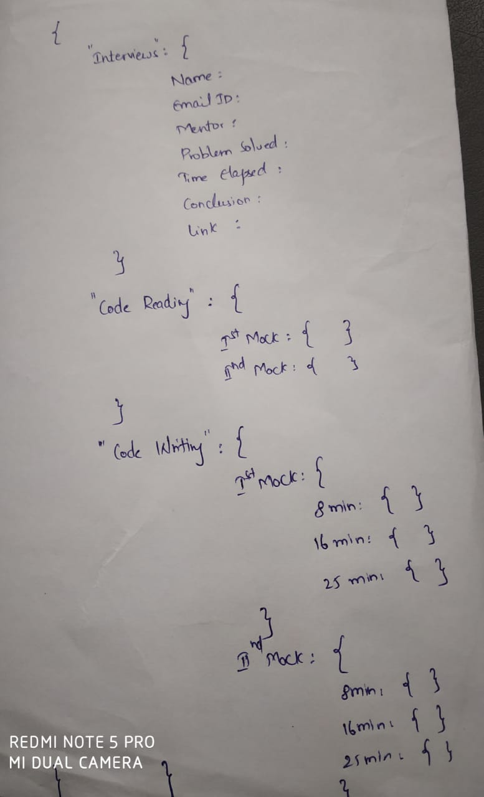
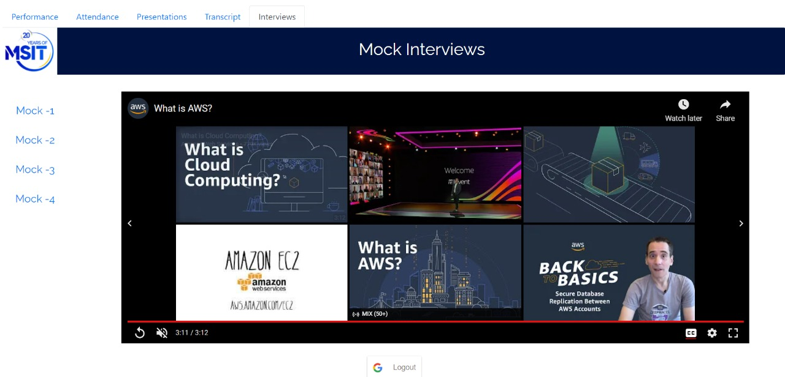
June 07 - June 12, 2021
We created the Mock Interview page as per the requirements and even added video to it with sub-titles as well
The second task for us was to display graphs for each course
Together, there were around 25 courses and their respective graphs should be displayed. This task was divided within the whole team and we accomplished it as per the requirements by using MSIT-Colour code only.
The next thing which we did was making these both pages responsive and we accomplished it successfully
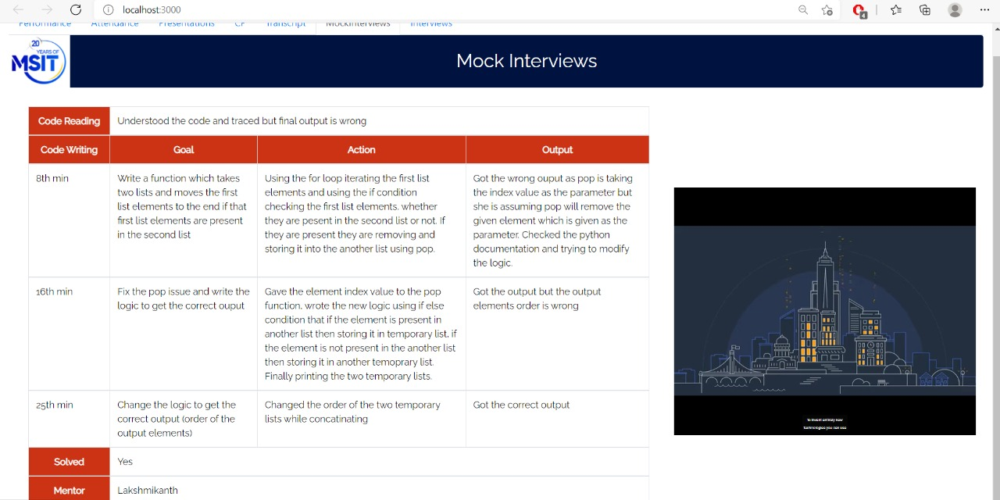
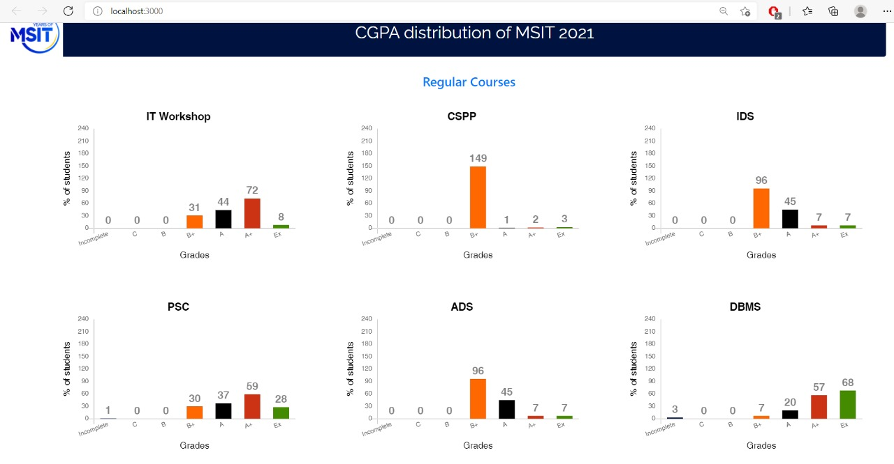
June 14 - June 19, 2021
There were some impediments in the Grade summarization page, we resolved them.
Secondly, we wrote the documentation for the whole project work till date.
We got some issues for some of the students who were absent for the mock, eventually we solved that issue.
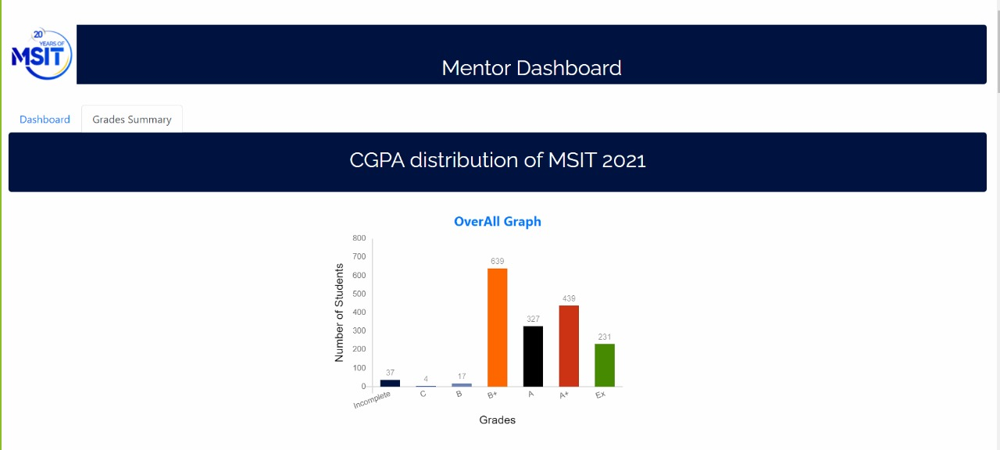
June 21 - June 25, 2021
We are in the end of our project and worked on the documentationof our project and added details into it like for every week's work
Secondly, we worked on our project's presentation that needs to presented on Friday.
We selected a template online and made our ppt successfully by adding the required details of the work which we have done in this whole project.
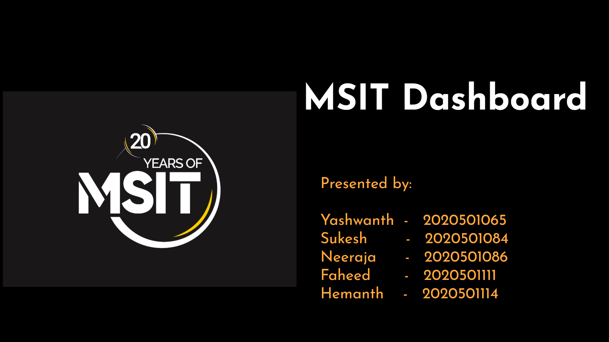
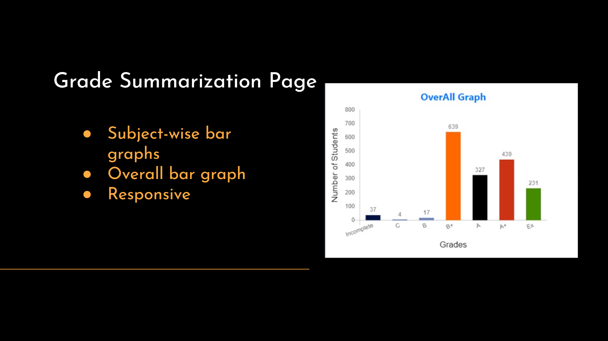